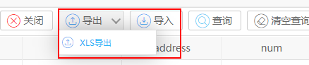
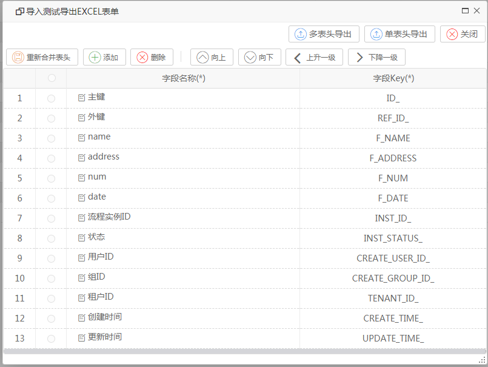
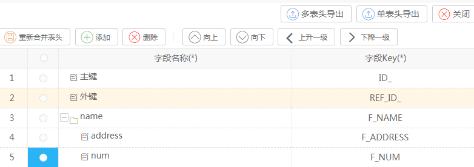
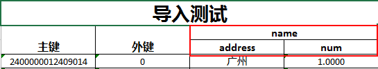
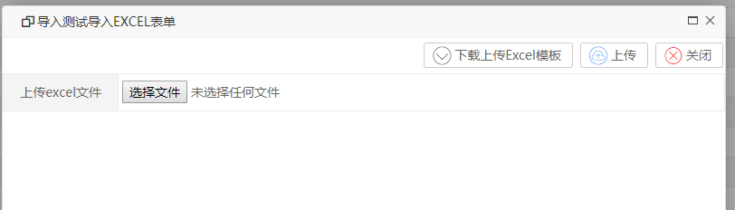
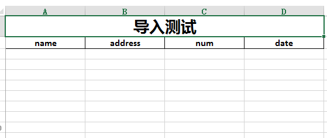

功能说明
该功能用于在自定义表单中数据的导出导入，可以自定义导出的列表和表头样式

EXCEL的导出
操作步骤
点击【XLS导出】按钮

【添加】：添加一行表头
【删除】：删除一行表头
【重新合并表头】：重新将该自定义列表的所有字段显示出来，可用于误删了原本表头的情况
【向上/下】：调整显示顺序
【上/下一级】：用于构造多级表头的显示。
例如将两个字段下降一级，然后点击多表头导出，则导出多表头形式的EXCEL，点击单表头打印，则只显示每个分支下最底层的表头。

多表头打印示例：

单表头打印示例：

EXCEL的导入
操作步骤
点击【导入】按钮

然后点击【下载上传Excel模板】按钮，下载上传EXCEL的格式模板

然后填入数据，点击【选择文件】选择文件上传，最后点击【上传】导入数据。成功导入后会有提示导入多少条数据。